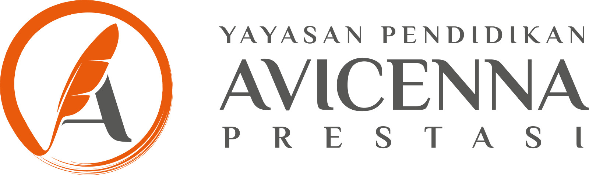
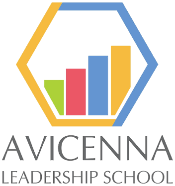

Kendaraan pribadi, satu asal dan satu tujuan, pulang pergi. Jarak dihitung dari koordinat checkpoint, harga BBM mengikuti harga resmi terbaru.
Sistem Reimbursement BBM Avicenna
Yayasan Pendidikan Avicenna Prestasi
Menyiapkan halaman...
SIRBA belum bisa terhubung ke server. Periksa koneksi internet, lalu muat ulang halaman.
Muat ulangCatatan: -
Perbaiki data sesuai catatan, tekan Hitung lalu Simpan revisi. PDF formulir dibuat ulang otomatis dengan data baru (tanda tangan QR pemohon tetap). Setelah tersimpan, approve lagi di menu Approval.
Unggah PDF dulu. Data terisi otomatis dari isi form PDF dan bisa dikoreksi bila perlu.
| Disimpan | Pemohon | Rute | Tanggal dinas | File | Total | Status |
|---|
| No. pengajuan | Pemohon | Rute | Tanggal dinas | Total | Status |
|---|
| No. pengajuan | Pemohon | Rute | Total | Status | Tanda tangan |
|---|
Jumlah yang saat ini menunggu di setiap posisi.
Termasuk yang masih berjalan, dihitung sampai sekarang.
Berapa lama pengajuan sudah menunggu di posisinya sekarang. Warna makin pekat = makin banyak.
| Posisi | < 1 hari | 1–3 hari | 3–7 hari | > 7 hari | Total |
|---|
Jumlah pengajuan yang berhasil melewati setiap tahap.
Not approve / tidak sesuai, dan alasan terakhirnya.
Dari dibuat sampai diserahkan ke Finance YPAP (pengajuan selesai).
Pengajuan selesai saja.
| Posisi | Sudah lewat | Rata-rata | Median | Terlama | Sedang tertahan | Tertahan paling lama |
|---|
| No. pengajuan | Pemohon | Posisi sekarang | Menunggu sejak | Lama | Total |
|---|
Asal atau tujuan belum ada (mis. rumah pegawai)? Tambahkan di menu Checkpoint dengan link Google Maps atau koordinat.
Jarak yang diisi manual ikut tersimpan ke rute saat hasil disimpan, jadi perjalanan berikutnya ke tujuan yang sama langsung terisi. Pengajuan ini hanya untuk biaya bensin, tanpa tol dan parkir.
Database belum tersambung di tampilan ini. Masuk ke akun Claude untuk menyimpan.
| No / tanggal dinas | Pemohon | Rute & jalur dipilih | Kendaraan | Jarak PP | BBM | Total | Status |
|---|
Semua pengajuan dari seluruh cabang, diperbarui otomatis. Klik baris untuk melihat detail.
| No. pengajuan | Cabang | Status | Dibuat | Tgl dinas | Pemohon | Keperluan | Asal ⇄ tujuan | Kendaraan | Jarak (km) | Sumber jarak | Biaya BBM | Total | Approve AP | Approve Kepala TU | Verifikasi Staf GA | Verifikasi Kadep GA | Catatan / alasan |
|---|
| Nama | Kategori | Koordinat |
|---|
| Rute | Jarak | Sumber |
|---|
Tempel link Google Maps lengkap (google.com/maps/...), koordinat terisi otomatis. Untuk link pendek maps.app.goo.gl, buka dulu di browser lalu salin link panjangnya, atau tekan lama titik di peta dan salin koordinatnya.
Harga dikunci dan tidak bisa diubah dari halaman ini. Pertalite dan Biosolar adalah harga subsidi; Pertamax harga nonsubsidi wilayah Jabodetabek yang bisa berubah tiap bulan. Claude memeriksa harga resmi Pertamina setiap tanggal 1 dan 2 tiap bulan, lalu memperbarui angka di sini bila ada perubahan.
Hanya dua kendaraan: Mobil dan Motor. Rasio yang dipakai adalah rata-rata terbesar dari semua jenis di rentangnya.
| Kendaraan | Jenis | Rentang km/L | Rata-rata |
|---|
Jarak otomatis = jarak garis lurus antar koordinat × 1,4 (faktor jalan rata-rata Jabodetabek, mendekati rute terpendek). Bila rute sudah pernah diisi dari Google Maps, angka itu yang dipakai. BBM = jarak PP ÷ km/L × harga, dibulatkan ke atas Rp 100. Total dibulatkan ke atas Rp 1.000.
Reset kata sandi memberi kata sandi sementara baru. Pengguna wajib menggantinya saat masuk berikutnya.
| ID | Nama / jabatan | Unit | Status |
|---|